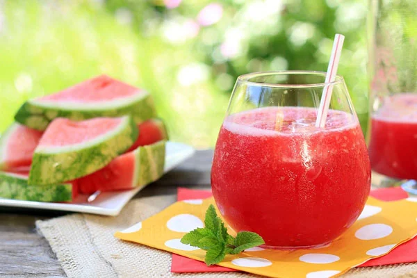
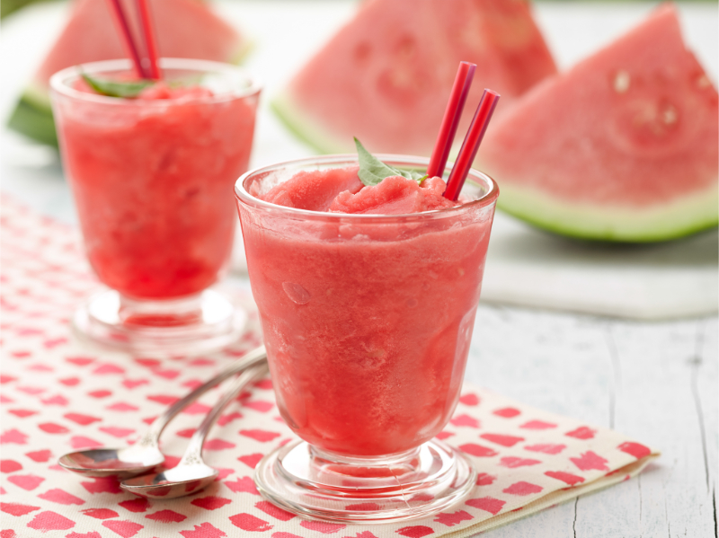
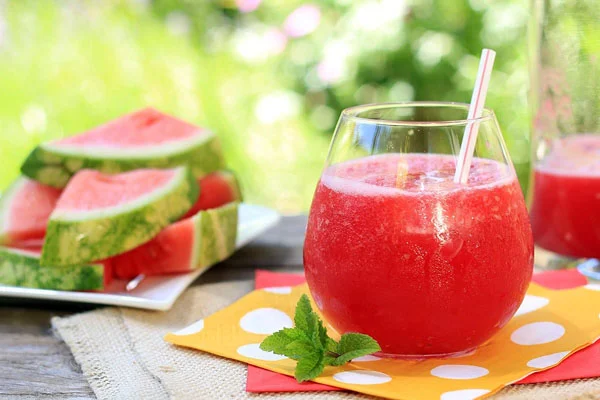
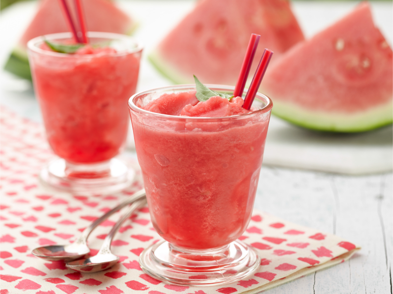

Sinh Tố Dưa Hấu
Giải nhiệt mùa hè cực đã với ly sinh tố dưa hấu mát lạnh, ngọt dịu và cực kỳ dễ làm! Sinh tố dưa hấu không chỉ là thức uống giải khát tuyệt vời mà còn cung cấp nhiều vitamin và khoáng chất, giúp cơ thể sảng khoái và tươi mới. Đây là lựa chọn hoàn hảo cho những ngày nắng nóng.
 



Nguyên liệu
- Dưa hấu: 300g (chọn dưa hấu chín đỏ, ngọt, bỏ hạt và cắt thành miếng nhỏ).
- Sữa tươi không đường: 100ml (có thể dùng sữa tươi có đường nếu thích ngọt hơn, hoặc sữa hạt để thay thế).
- Đường: 2 thìa cà phê (tùy chọn, điều chỉnh theo độ ngọt của dưa hấu và khẩu vị cá nhân).
- Đá viên: Khoảng 100-150g (tùy thuộc vào độ lạnh và độ đặc mong muốn).
- Lá bạc hà tươi: Vài lá để trang trí (tùy chọn).
Cách làm
-
Bước 1: Chuẩn bị dưa hấu
- Dưa hấu rửa sạch vỏ bên ngoài. Gọt bỏ phần vỏ xanh, sau đó cắt dưa hấu thành miếng nhỏ vừa đủ cho vào máy xay.
- Loại bỏ hạt dưa hấu (nếu có) để sinh tố mịn hơn.
- Nếu có thời gian, bạn có thể cho dưa hấu vào tủ lạnh khoảng 1-2 tiếng trước khi xay để sinh tố mát tự nhiên mà không cần quá nhiều đá.
-
Bước 2: Xay sinh tố
- Cho dưa hấu đã cắt nhỏ, 100ml sữa tươi, 2 thìa cà phê đường (nếu dùng) và đá viên vào máy xay sinh tố.
- Đậy nắp và xay nhuyễn hỗn hợp ở tốc độ cao cho đến khi hỗn hợp trở nên mịn, sánh và không còn cục đá lớn. Thời gian xay có thể khoảng 30 giây đến 1 phút tùy công suất máy xay.
- Nếu hỗn hợp quá đặc, có thể thêm một chút sữa tươi hoặc nước lọc. Nếu muốn đặc hơn, thêm một ít đá viên hoặc dưa hấu.
-
Bước 3: Trình bày và thưởng thức
- Đổ sinh tố dưa hấu đã xay mịn ra ly thủy tinh.
- Trang trí thêm một vài lá bạc hà tươi trên miệng ly hoặc vài hạt dưa hấu nhỏ để tăng tính thẩm mỹ.
- Thưởng thức sinh tố dưa hấu ngay khi còn lạnh để cảm nhận trọn vẹn hương vị tươi mát, ngọt dịu và sảng khoái.
Mẹo nhỏ để Sinh Tố Dưa Hấu ngon hơn:
- Chọn dưa hấu: Chọn dưa hấu chín đỏ, vỏ căng bóng, nặng tay và có tiếng "bộp bộp" khi vỗ nhẹ. Dưa hấu càng ngọt thì sinh tố càng ngon và ít cần thêm đường.
- Làm lạnh dưa hấu: Nếu dưa hấu đã được làm lạnh trước, bạn có thể giảm lượng đá viên khi xay để sinh tố không bị loãng và giữ được hương vị dưa hấu đậm đà hơn.
- Điều chỉnh độ ngọt: Tùy theo độ ngọt tự nhiên của dưa hấu và khẩu vị, bạn có thể điều chỉnh lượng đường hoặc sữa đặc (thay cho đường) cho phù hợp.
- Kết hợp hương vị: Để tăng thêm hương vị, bạn có thể thêm một vài lát gừng nhỏ khi xay, hoặc một chút nước cốt chanh/cam để tạo vị chua nhẹ.
- Sáng tạo: Thử kết hợp dưa hấu với các loại trái cây khác như dâu tây, chuối, hoặc xoài để tạo ra những hương vị sinh tố mới lạ.
- Độ mịn: Xay thật kỹ để sinh tố mịn màng, không còn lợn cợn của dưa hấu hoặc đá.
▶️ Xem video hướng dẫn chi tiết
← Quay lại trang chủ
Bình luận và Đánh giá
Đánh giá của bạn
Chưa có bình luận nào.